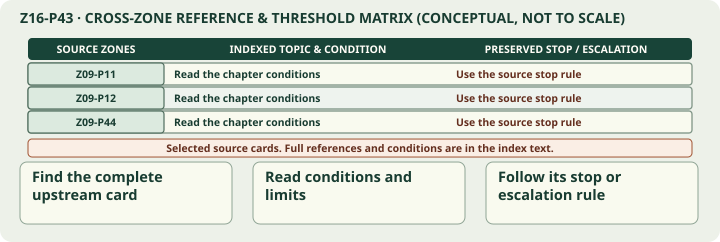

Z16-P43 · Field reference atlas · New manuscript
Knots, Hitches, Lashings and Mechanical-Advantage Safety Index
Locate the original encyclopedia cards for knots, Hitches, Lashings and Mechanical-Advantage Safety Index.
When it applies · Offline reference lookup. The linked chapter defines the situation, audience and limits.
Equipment · Offline reader or the complete linked source cards in print.

Actions
- Open Z09-P11 for evaluate salvaged and natural cordage under abrasion and tension; Z09-P12 for form a two-ply reverse-wrap cord from prepared dry fibers.[A10, K09]
- Open Z09-P44 for understand the force on a fixed pulley redirect; Z09-P45 for understand why conceptual mechanical diagrams are not load certifications.[A10, K13, K06]
- Read the linked card’s applicability, equipment and stop conditions together. Keep review and source limitations attached to any excerpt.[A10, ED]
Failure recognition · Acting on a keyword or title while overlooking an upstream exception or stop condition.[A10, ED]
Verify · Confirm the exact page ID and read the full conditions before using the reference.[A10, ED]
Stop or change course · If the situation falls outside a linked card’s conditions or its stop rule applies, stop using this index as a decision aid. Follow the full card and current local directions.[A10, ED]
Evidence and editorial notes
- A10 · FEMA / Ready.gov · Make a Plan (current web edition)
- Section: Offline reader navigation, historical lineage, and HOLD transparency · Conditions: Using the complete 16-zone offline archive, zone readers, and print proofs
Support: Navigation aids expose draft status, reconstruction lineage, open diagnostic photo needs, and pending specialist holds on every lookup path.
Limitations: This index entry does not independently establish any safety, regulatory or diagnostic instruction. · Conflicting evidence: None noted.
Editorial note: Index design and cross-reference policy. Substantive directions come from linked upstream chapter claims. · Specialist reviewer: Accessibility, print QA, and editorial reviewer
Primary source · checked 2026-11-24 - K06 · NPS · Forces and Tools (current web edition)
- Section: Forces and Tools > Simple Machines and Mechanical Advantage · Conditions: Levers, wedges, inclined planes and friction mechanisms
Support: Simple machines trade force for distance (levers, wedges, pulleys); friction, alignment and material strength limit real-world output below ideal ratios.
Limitations: Ideal mechanical advantage ignores friction losses and breaking strength of ropes or anchors. · Conflicting evidence: None; clarifies physical trade-offs without implying engineered load ratings.
Editorial note: Anchors mechanical-advantage, wedge-splitting and pulley/rigging limit cards. · Specialist reviewer: Mechanical engineering and rigging safety
Primary source · checked 2026-11-24 - K09 · USDA Forest Service · Handtools for Trail Work (0523-2810-MTDC) (agency handbook)
- Section: Cordage, Anchors and Rigging Boundaries · Conditions: Non-life-safety camp lashing, tarps, haul lines and tie-downs
Support: Cordage strength drops significantly at knots, sharp bends, wet fibers, UV exposure and abrasion; inspect fibers before loading and never use unrated camp cord or improvised bindings for life-safety suspension or climbing.
Limitations: No universal breaking strength applies to natural plant fibers or weathered salvaged rope. · Conflicting evidence: Counters folklore claims equating improvised cordage to rated climbing rope.
Editorial note: Separates camp utility lashing/hauling from life-safety rigging. · Specialist reviewer: Rigging safety and materials mechanics
Primary source · checked 2026-11-24 - K13 · NPS · Forces and Tools (current web edition)
- Section: Simple machines; independent A01 static force-balance derivation · Conditions: Unloaded schematic of an ideal fixed redirect; two equal line tensions
Support: The force on the redirect is the vector sum of the two rope pulls. Equal tensions T give 2T for parallel pulls in the same direction and square-root-of-two times T for perpendicular directions.
Limitations: Independent statics derivation, not a numerical lifting limit. Friction, shock and support geometry invalidate simplified assumptions. · Conflicting evidence: See A01 cross-zone review.
Editorial note: Use only within the stated conditions. · Specialist reviewer: Qualified rigging and engineering
Primary source · checked 2026-11-24
Source lineage · New manuscript (Z16 P20 technique index) · Classification · New manuscript.